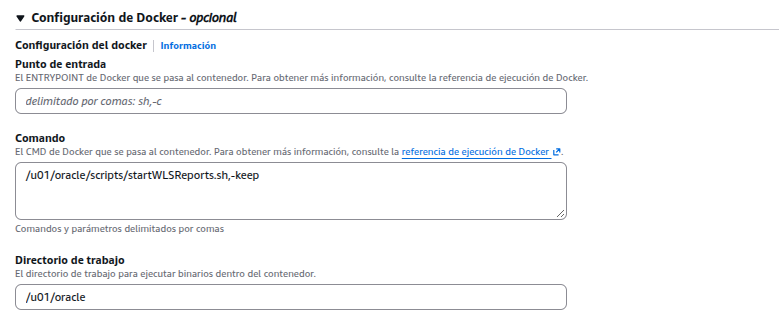
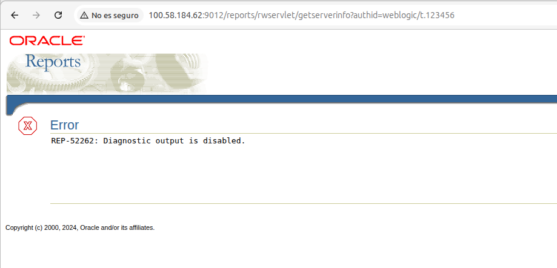

AWS ECS · Fargate Crear el contenedor Reports Task definition · Servicio · Cloud Map · rwservlet
reports-server sobre el cluster forms_report, alineado con Forms
Visión general
Guía paso a paso para crear la task definition reports-server y su servicio en el
cluster forms_report, registrado en Cloud Map como weblogic-reports.forms.local, arrancar el managed server
WLS_REPORTS, completar Reports en el dominio y validarlo con un reporte real. Parte de lo creado en la guía del
Contenedor AdminServer (infraestructura, cluster, red y hostnames) y sigue el esquema del
Contenedor Forms; lo compartido se referencia en lugar de repetirse.
Service Discovery, dominio en EFS y validación funcional de Reports.
0 Requisitos y valores fijosHecho
El contenedor Reports se apoya en lo creado en la guía del Contenedor AdminServer (infraestructura común, cluster, red y hostnames) y sigue el mismo esquema que el Contenedor Forms. Esta guía solo cubre lo propio de Reports; lo compartido se referencia a la guía admin.
0.1 · Requisitos ya creados
| Elemento | Dónde se crea |
|---|---|
Imagen ECR forms-docker (tag r2, ver anexo) | Admin 1.1 |
Security group forms-sg-ecs + regla interna Todo el tráfico | Admin 1.2 |
EFS rector-dev y regla NFS 2049 | Admin 1.3 |
Rol de tarea ecs-forms-admin-task-role (ECS Exec, reutilizable) | Admin 1.4 |
Namespace Cloud Map forms.local | Admin 1.5 |
Cluster forms_report | Admin 2 |
Redes del servicio (solo pub-A) y ruta a la BD en Pub-RT | Admin 4.9 · 4.10 |
Hostnames del dominio alineados a *.forms.local (incluye ReportsMachine) | Admin 6 |
AdminServer en RUNNING en weblogic-admin.forms.local:7001 | Admin 7 |
0.2 · Valores propios de Reports
| Concepto | Forms | Reports |
|---|---|---|
| Familia TD / contenedor | forms-server | reports-server |
| Servicio ECS | forms | reports-server |
| Service Discovery | weblogic-forms | weblogic-reports |
| Managed server / Machine | WLS_FORMS / FormsMachine | WLS_REPORTS / ReportsMachine |
| Puerto HTTP / HTTPS | 9001 / 9501 | 9012 / 9512 |
| Administration Port | 9991 | 9992 |
| Node Manager | 5556 (nodemanager_forms) | 5556 (nodemanager_reports) |
| Scripts EFS | …/scripts/forms | …/scripts/reports |
JAVA_OPTIONS | -Dforms.instance=forms1 | No aplica |
Variables de compilación (FORMS_PATH, FRMCMP, PROC…) | Sí | No aplica (se compila en Forms) |
TNS_ADMIN | $DOMAIN_HOME/config/fmwconfig | Igual |
| Log group | /ecs/forms-server | /ecs/reports-server (crearlo a mano, 1.7) |
| URL de prueba | /forms/frmservlet | /reports/rwservlet |
r2, no r1: a r1 le faltan las librerías Motif/X11 del motor de
Reports. Usar la misma imagen en los tres servicios (Anexo — imagen r2).
scripts/reports con
entrypoint.sh, startNodeManager.sh, create-reports-machine.py,
startWLSReports.sh, create-reports-tools.py y prepare-reports-domain.sh
(origen: dist/scripts/reports/). Si no existe, la tarea falla al montar el volumen
(ResourceInitializationError … mount.nfs4: … No such file or directory).

forms_report con admin (forms-admin:6),
forms (forms-server:9) y reports-server (reports-server:2), cada uno 1/1

service:admin, service:forms, service:reports-server)1 Crear task definition ReportsHecho
La task definition reports-server describe el contenedor del managed server WLS_REPORTS.
Sigue el mismo asistente que la del AdminServer (Admin 3, donde se explica
cada sección). Cambian el nombre, los puertos, las variables, la carpeta de scripts y el log group.
ECS → Definiciones de tareas → Crear nueva definición de tarea. No partir de
Crear nueva revisión sobre forms-server: cambiaría la familia de Forms. Para partir de su
configuración usar el JSON del anexo con Crear nueva definición de tarea con JSON.
1.1 · Familia, Fargate, tamaño y roles
| Campo | Valor |
|---|---|
| Familia | reports-server |
| Tipo de inicio / SO | AWS Fargate · Linux/X86_64 |
| CPU / memoria | 2 vCPU / 4 GB (8 GB si hay reportes pesados) |
| Rol de tarea / ejecución | ecs-forms-admin-task-role / ecsTaskExecutionRole (Admin 3.2) |
rwEngine) aparte de la JVM de WLS_REPORTS. Con 4 GB alcanza para
reportes modelo; si aparece OutOfMemoryError o la tarea se detiene con exit code 137,
crear una nueva revisión con 8 GB.

reports-server, Fargate, 2 vCPU, 4 GB
reports-server con imagen forms-docker@sha256:fbdf8505… (r2)1.2 · Contenedor: imagen y puertos
Contenedor reports-server (esencial), imagen forms-docker:r2 fijada por digest. Puertos del managed
server y de su Node Manager:
| Puerto | Nombre | Uso |
|---|---|---|
9012 | wls-reports-http | WLS_REPORTS HTTP (/reports/rwservlet) |
9512 | wls-reports-https | WLS_REPORTS HTTPS |
9992 | wls-reports-admin | Administration Port del managed |
5556 | nodemanager | Node Manager de ReportsMachine |
5558:5556 para no chocar con admin y forms en el mismo
host. En Fargate cada tarea tiene su propia IP, así que se usa 5556 directo.

1.3 · Variables de entorno
Equivalentes al servicio reports del compose. Indican dónde está el AdminServer y qué managed server arrancar:
ORACLE_HOME=/u01/oracle DOMAIN_NAME=forms_domain DOMAIN_HOME=/u01/oracle/user_projects/domains/forms_domain TNS_ADMIN=/u01/oracle/user_projects/domains/forms_domain/config/fmwconfig ADMIN_SERVER_NAME=AdminServer ADMIN_SERVER_HOST=weblogic-admin.forms.local ADMIN_SERVER_PORT=7001 ADMIN_USER=weblogic ADMIN_PASSWORD=<usar Secrets Manager luego> MANAGED_SERVER_NAME=WLS_REPORTS MANAGED_SERVER_PORT=9012 NODE_MANAGER_PORT=5556 LD_LIBRARY_PATH=/u01/oracle/lib:/u01/oracle/oracle_common/lib
PATH=…:${PATH}: ECS no expande ${PATH} y el contenedor falla con
exec: "sleep": executable file not found in $PATH (Admin 3.4). Omitirlo o
definirlo completo: /u01/oracle/bin:/u01/oracle/oracle_common/bin:/usr/local/sbin:/usr/local/bin:/usr/sbin:/usr/bin:/sbin:/bin.

1.4 · Comando y directorio de trabajo
Punto de entrada sh,-c, comando sleep infinity, directorio /u01/oracle: la tarea queda viva
para entrar por ECS Exec y arrancar WLS_REPORTS a mano (por qué, en Admin 3.5).
Cuando el arranque sea estable se puede cambiar por un script de arranque en una nueva revisión, como en
Admin 7d.

sh,-c, comando sleep infinity, directorio /u01/oracle1.5 · Almacenamiento efímero + volúmenes EFS
Mismo EFS y mismas carpetas que admin y Forms (Admin 3.6); el único cambio es la
carpeta de scripts, scripts/reports. Almacenamiento efímero 100 GiB; cifrado en tránsito habilitado.
| Volumen | Directorio raíz (filesystem fs-08471cc88d2a8edc3) |
|---|---|
efs-domains | /aws-backup-restore_2020-04-19T22-54-07-041Z/domain_forms/domains |
efs-app | /aws-backup-restore_2020-04-19T22-54-07-041Z/domain_forms/app |
efs-scripts | /aws-backup-restore_2020-04-19T22-54-07-041Z/domain_forms/scripts/reports |

efs-domains
efs-app
efs-scripts apuntando a scripts/reports1.6 · Puntos de montaje y logs
Mismas rutas en el contenedor que admin (Admin 3.7); logs en /ecs/reports-server.
| Campo | Valor |
|---|---|
efs-domains / efs-app / efs-scripts | /u01/oracle/user_projects/domains · /u01/oracle/user_projects/apps · /u01/oracle/scripts |
awslogs-group | /ecs/reports-server |
awslogs-region / awslogs-stream-prefix | us-east-1 / ecs |


awslogs-group=/ecs/reports-server1.7 · Crear el log group /ecs/reports-server (obligatorio)
Aunque la TD lleva awslogs-create-group=true, ecsTaskExecutionRole no tiene permiso
logs:CreateLogGroup. Si el grupo no existe, la tarea queda Detenida con
ResourceInitializationError: failed to validate logger args ... AccessDeniedException ... logs:CreateLogGroup.
/ecs/forms-admin y /ecs/forms-server ya existían, por eso no ocurrió con admin ni Forms.
- CloudWatch → Registros → Administración de registros → Crear un grupo de registros.
- Nombre
/ecs/reports-server(con la barra inicial); retención No vence nunca; clase Estándar; sin KMS. - Crear.
aws logs create-log-group --log-group-name /ecs/reports-server --region us-east-1


/ecs/reports-server, retención No vence nunca
/ecs/forms-admin y /ecs/forms-serverSi el servicio ya existía y sus tareas fallaron por esto: Actualizar servicio → Forzar nueva implementación.
1.8 · Crear
La primera revisión fue reports-server:1 (imagen r1); la vigente es reports-server:2 (imagen r2).

reports-server:1 y reports-server:2, ambas activas
reports-server:2: Fargate, awsvpc, 2 vCPU / 4 GiB, 3 volúmenes2 Crear servicio + Service DiscoveryHecho
El servicio reports-server mantiene una tarea Reports en ejecución. El asistente es el mismo que el del servicio
admin (Admin 4, con cada sección explicada); cambian el nombre de Service Discovery
y la apertura del puerto 9012.
2.1 · Crear el servicio
- Cluster
forms_report→ pestaña Servicios → Crear. - Familia
reports-server(revisión más reciente); nombrereports-server; tareas deseadas1. - Cómputo Fargate, plataforma
LATEST, ECS Exec encendido.

admin y forms en ejecución → Crear
reports-server; capacidad FARGATE
LATEST, ECS Exec encendido, réplica con 1 tarea2.2 · Opciones de implementación
Actualización acumulativa, mín. 0 % / máx. 200 % (Admin 4.3).
El mínimo 0 % evita que durante un redespliegue convivan dos WLS_REPORTS escribiendo sobre el mismo dominio en EFS.

2.3 · Service Discovery weblogic-reports
Registra la tarea como weblogic-reports.forms.local, el host que usan ReportsMachine, el Node Manager
de Reports y Coherence. Mismo procedimiento que weblogic-admin (Admin 4.6).
| Campo | Valor |
|---|---|
| Espacio de nombres | Existente: forms.local (ns-r3zqawwpjtp5pzue) |
| Servicio de detección | Nuevo: weblogic-reports |
| Registro DNS / TTL | A / 15 · propagación de estado ECS habilitada |

weblogic-reports, registro A, TTL 152.4 · Redes del servicio
Misma red que admin: solo pub-A, SG forms-sg-ecs e IP pública activada
(Admin 4.9). La ruta a la BD ya existe en Pub-RT
(Admin 4.10); no asociar database-A.

pub-A, SG forms-sg-ecs, IP pública activada2.5 · Regla de entrada 9012 en forms-sg-ecs
Para acceder a rwservlet desde fuera se abre el 9012 en el security group compartido
(Admin 1.2), desde EC2 → Grupos de seguridad, no desde el asistente.
La regla interna Todo el tráfico cubre Node Manager, Administration Port y Coherence entre los tres contenedores.
| Puerto | Uso | Origen recomendado |
|---|---|---|
9012 | Reports HTTP (rwservlet) | IP de administración /32 o red corporativa |
9512 | Reports HTTPS | No se abre en DEV |
9992 · 5556 · UDP 7574 | Administration Port · Node Manager · Coherence | Solo regla interna del SG |
defaultCoherenceCluster, compartido por cluster_forms y cluster_reports) descubre
miembros por UDP 7574. Si la regla interna es solo Todos los TCP, agregar Todos los UDP
con el mismo origen. 0.0.0.0/0 en 9012 solo en DEV.

9012 (Reports HTTP access) y regla interna desde sg-0e1787d32bac71fcd2.6 · Crear
La consola vuelve al cluster con el aviso “La implementación de reports-server está en curso”.

reports-server en 0/1 con la implementación En curso (pasa a 1/1 en unos minutos)3 Verificar Running, Cloud Map y ECS ExecHecho
Como en admin (Admin 5): esperar la tarea en Ejecutando (la descarga de la
imagen tarda ~5 min), comprobar el registro weblogic-reports en Cloud Map y entrar con ECS Exec:
aws ecs execute-command \ --cluster forms_report \ --task <TASK_ID> \ --container reports-server \ --interactive \ --command "su -s /bin/bash oracle"
df -h | grep -E 'domains|apps|scripts'
ls /u01/oracle/scripts # scripts de reports
# DNS Cloud Map: debe coincidir con la IP VPC de la tarea (eth1), no con 169.254.x.x
getent hosts weblogic-reports.forms.local weblogic-admin.forms.local weblogic-forms.forms.local
ip -4 -o addr show | awk '{print $2,$4}'
timeout 5 bash -c 'echo >/dev/tcp/weblogic-admin.forms.local/7001' && echo OK || echo FAIL # AdminServer
timeout 5 bash -c 'echo >/dev/tcp/192.168.229.137/1521' && echo OK || echo FAIL # BD Oracle


forms.local: weblogic-admin, weblogic-forms y weblogic-reports
weblogic-reports: una instancia registrada (ID = tarea ECS), en buen estado
weblogic-reports.forms.local → 10.171.240.80 (cambia en cada redespliegue)
7001 OK y BD 1521 OK4 Verificar hostnames del dominioHecho
ReportsMachine y nodemanager_reports/nodemanager.properties deben usar
weblogic-reports.forms.local. El ajuste lo hace set-cloudmap-hostnames.sh una sola vez para las tres
Machines (Admin 6); aquí solo se verifica:
grep -n 'weblogic-reports' $DOMAIN_HOME/config/config.xml $DOMAIN_HOME/nodemanager_reports/nodemanager.properties # Esperado: solo weblogic-reports.forms.local, nunca el nombre corto
UnknownHostException y WLS_REPORTS queda fuera del WKA de
Coherence (Hostname weblogic-reports ... failed to resolve): a los 300 s pasa a FAILED. Si falta, aplicar
Admin 6 con todos los servidores detenidos.

ReportsMachine en config.xml y nodemanager_reports/nodemanager.properties con weblogic-reports.forms.local5 Arrancar Node Manager y WLS_REPORTSHecho
Con el AdminServer en RUNNING (Admin 7), se arranca el Node Manager de
ReportsMachine (lo necesitan el AdminServer y la creación de Reports Tools del Paso 6) y luego
WLS_REPORTS, desde la sesión ECS Exec del Paso 3.
5.1 · Credenciales de arranque (boot.properties)
mkdir -p "$DOMAIN_HOME/servers/WLS_REPORTS/security" cat > "$DOMAIN_HOME/servers/WLS_REPORTS/security/boot.properties" <<EOF username=weblogic password=<clave> EOF chmod 600 "$DOMAIN_HOME/servers/WLS_REPORTS/security/boot.properties"
export WLS_USER / WLS_PW no sirve:
startManagedWebLogic.sh las reinicia vacías. No confundir con el boot.properties de Node Manager
(.../data/nodemanager/).
5.2 · Node Manager de ReportsMachine
nohup /u01/oracle/scripts/startNodeManager.sh \ > "$DOMAIN_HOME/nodemanager_reports/nm_console.out" 2>&1 & tail -f "$DOMAIN_HOME/nodemanager_reports/nodemanager.log" # Esperado: "Secure socket listener started on port 5556, host weblogic-reports.forms.local"

weblogic-reports.forms.local/10.171.240.80 (las líneas de enero son del entorno compose)5.3 · Arrancar WLS_REPORTS
Opción recomendada — startWLSReports.sh (como root u oracle): valida
boot.properties y el AdminServer, limpia .lok, arranca en segundo plano y espera RUNNING + HTTP 200 de
/reports/rwservlet:
/u01/oracle/scripts/startWLSReports.sh # Reinicio: pkill -f 'weblogic.Name=WLS_REPORTS'; sleep 10; /u01/oracle/scripts/startWLSReports.sh
Para monitorear el inicio:
tail -100f /u01/oracle/user_projects/domains/forms_domain/servers/WLS_REPORTS/logs/WLS_REPORTS.log # Esperado: <Server state changed to RUNNING.>
Alternativas: WebLogic Remote Console (Servidores → WLS_REPORTS → Iniciar), WLST
(connect(...); start('WLS_REPORTS','Server')) o
./bin/startManagedWebLogic.sh WLS_REPORTS t3://weblogic-admin.forms.local:7001 en segundo plano.

WLS_REPORTS en RUNNING (BEA-000365) y /reports/rwservlet → HTTP 2005.4 · Targets de la aplicación reports
Remote Console (o WLST) → Deployments → reports#14.1.2 → Targets: desmarcar AdminServer y marcar
WLS_REPORTS (o cluster_reports), si no se hizo al crear el dominio. Si sigue en AdminServer,
/reports/rwservlet no responde en 9012.
5.5 · Arranque automático de WLS_REPORTS al iniciar la tareaHecho
Validado el arranque manual (5.3), se cambia el comando del contenedor para que la tarea inicie
WLS_REPORTS sin intervención, igual que el AdminServer (Admin 7d) y
WLS_FORMS (Forms 5d): nueva revisión de la task
definition y actualización del servicio.
- ECS → Definiciones de tareas →
reports-server→ última revisión → Crear nueva revisión. - Contenedor
reports-server→ Configuración de Docker:- Punto de entrada: vacío.
- Comando:
/u01/oracle/scripts/startWLSReports.sh,-keep(reemplaza asleep,infinity). - Directorio de trabajo:
/u01/oracle(sin cambios).
- Crear → nueva revisión (
reports-server:N). - Cluster
forms_report→ servicioreports-server→ Actualizar → revisiónreports-server:N→ Forzar nueva implementación → Actualizar. - Con la nueva tarea en Ejecutando, validar RUNNING con el
taildeWLS_REPORTS.log(5.3) y el reporte de prueba (Paso 7).

startWLSReports.sh,-keepEquivalente en el JSON de la task definition:
"command": ["/u01/oracle/scripts/startWLSReports.sh", "-keep"]
Con -keep, si el AdminServer aún no responde (tareas lanzadas a la vez), el script lo espera hasta
WAIT_TIMEOUT (600 s) antes de arrancar WLS_REPORTS; la tarea sigue viva aunque el managed server
falle, para poder entrar por ECS Exec a revisar. Sin -keep la tarea termina al fallar o al alcanzar RUNNING,
por lo que no sirve como comando del contenedor.
/u01/oracle/scripts): debe existir con permiso de ejecución
(chmod +x startWLSReports.sh) y requiere el boot.properties de 5.1.
El Node Manager de ReportsMachine no se arranca automáticamente: si hace falta (consola, Reports Tools del
Paso 6), iniciarlo por ECS Exec como en 5.2.
7 Validación funcional de ReportsHecho
Validación con reportes modelo (definiciones sencillas, sin lógica de negocio) para comprobar que Reports Server responde en la arquitectura containerizada y que la conexión a la BD funciona.
| Prueba | URL / comando | Resultado esperado |
|---|---|---|
| Servlet activo | http://<IP-pública>:9012/reports/rwservlet | Página de bienvenida de Oracle Reports Services |
| Info del server in-process | …/rwservlet/getserverinfo?authid=weblogic/<clave> |
Reports Server, engines y estado. Sin authid responde REP-51019 (normal); con REP-56071 falta el rol RW_ADMINISTRATOR (opcional); con REP-52262 la salida de diagnóstico está deshabilitada (ver 7c). |
| Cola de trabajos | …/rwservlet/showjobs | Lista de jobs (vacía al inicio) |
| Reporte modelo con BD | …/rwservlet?report=<modelo>.rdf&userid=<usr>/<pwd>@<TNS>&destype=cache&desformat=PDF | PDF con datos de la BD |
Caso validado: CARR30015.rdf | …/rwservlet?report=CARR30015.rdf&userid=uspan/<clave>@BANESCO_DEV&destype=cache&desformat=pdf&nu_sec=205873 | PDF con datos |
CARR30015.rdf:
nu_sec=205873debe existir en la BDBANESCO_DEV; si la BD se refresca, usar una secuencia vigente.userides obligatorio: sin él el motor no compila el PL/SQL del RDF (REP-1247).- No requiere
mode=bitmap(a diferencia deSINR30032.rdf, en modo carácter:REP-1920). - El alias
BANESCO_DEVdebe estar en$TNS_ADMIN/tnsnames.oray la BD encendida.
Desde dentro del contenedor (sin depender del SG):
curl -s -o /dev/null -w '%{http_code}\n' http://localhost:9012/reports/rwservlet
curl -s http://localhost:9012/reports/rwservlet/getserverinfo | head -50
| Respuesta al invocar el reporte | Causa / acción |
|---|---|
REP-52266 / REP-51002 | Falta algún elemento del Paso 6; ver rwserver_diagnostic.log. |
Petición colgada + DFW-99998 UnsatisfiedLinkError: librwu.so: libXm.so.4 | Imagen r1: pasar la TD a r2 (anexo). |
| Pantalla "System User Authentication" | Seguridad de Reports activa: prepare-reports-domain.sh --disable-security o agregar &authid=. |
REP-1247: Uncompiled program units exist | Falta userid, faltan .pll en sourceDir u objetos inválidos en la BD (rwconverter.sh ... compile_all=yes). |
REP-1920 Character mode … PDF | RDF en modo carácter: &mode=bitmap o Mode = Bitmap en Reports Builder. |
| PDF en blanco | Sin datos (probar desformat=XML) o sin fuentes en $DOMAIN_HOME/reports/fonts. |
REP-0501 / ORA-12170 | Conectividad a 192.168.229.137:1521 (Paso 3) y alias TNS; ver el anexo de red hacia BD. |

rwservlet en 9012 desde fuera de AWS: HTTP 200, "Oracle Reports Services - Servlet"
CARR30015.rdf con nu_sec=205873: PDF "Cuadro Póliza - Recibo Prima" con datos de BANESCO_DEV
Al consultar getserverinfo con credenciales válidas, la respuesta por defecto es REP-52262: Diagnostic output is
disabled. No es una falla: WLS_REPORTS y rwservlet responden y la autenticación
pasó; solo indica que los comandos de diagnóstico del servlet están deshabilitados (valor por defecto de Oracle, recomendado
en producción porque exponen la configuración del server).

getserverinfo: REP-52262, servlet activo con diagnóstico deshabilitadorwservlet.properties de WLS_REPORTS cambiar
<diagnostic>no</diagnostic> por <diagnostic>yes</diagnostic> y reiniciar
WLS_REPORTS (5.3):
find $DOMAIN_HOME/config/fmwconfig/servers/WLS_REPORTS -name rwservlet.properties grep -n diagnostic <ruta>/rwservlet.propertiesVolver a
no al terminar las pruebas.